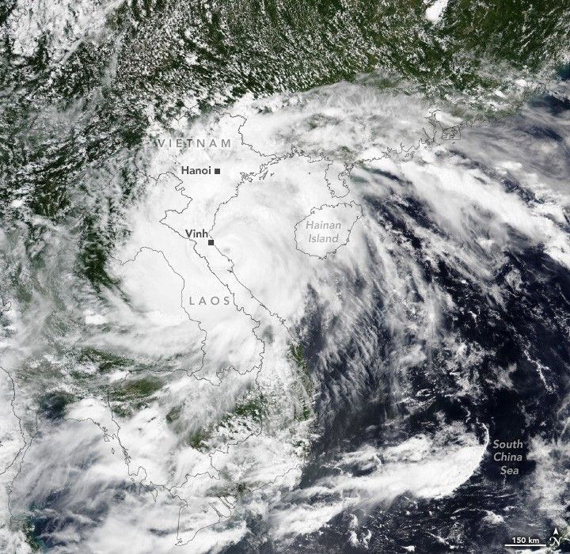

Typhoon Kajiki Lashes Southeast Asia
Over two days in late August 2025, Typhoon Kajiki lashed both China and Vietnam as it spun westward over the South China Sea.
The VIIRS (Visible Infrared Imaging Radiometer Suite) on the NOAA-20 satellite captured this image at about 06:00 Universal Time (1 p.m. local time) on August 25, 2025, as the storm’s eye neared Vietnam’s coastline. Sustained wind speeds at the time reached over 160 kilometers (100 miles) per hour, equivalent to a Category 2 storm on the Saffir-Simpson hurricane wind scale.
Before hitting Vietnam, the storm passed over the Philippines on August 22 as a tropical depression, according to the U.S. Navy’s Joint Typhoon Warning Center. Kajiki then churned over the South China Sea, where warm surface waters and low wind shear helped it strengthen. It skirted past the southern coast of China’s Hainan Island on August 24 as a Category 2 storm, whipping the area with strong winds and heavy rain before continuing west toward Vietnam.
The storm weakened as it moved inland near Vinh, but high winds and torrential rains were enough to down trees and flood homes, according to news reports. Ahead of the storm’s arrival, authorities in Vietnam had ordered hundreds of thousands of people across several provinces to evacuate.
Typhoon season in the Northwest Pacific stretches across the entire year, but storminess tends to peak in late summer. Kajiki is the basin’s 14th named storm of 2025.